An AI-assisted IT helpdesk system that automates ticket intake, classification, priority analysis, team routing, database storage, and ticket lifecycle management.
This project demonstrates how workflow automation and AI can be used to streamline an IT ticket management process.
The system receives IT issues submitted through a form and processes the information through an automated workflow.
The workflow can analyze the submitted issue, determine its category, priority, and urgency, generate a recommended action, and route the ticket to an appropriate support team.
The project was later expanded with a Node.js helpdesk dashboard and PostgreSQL database, allowing tickets to be viewed, updated, assigned, resolved, analyzed, and tracked through an activity history.
IT support teams may receive many tickets containing different types of hardware, software, network, and operational problems.
Manually reviewing each ticket, determining its category, identifying its urgency, and deciding what action should be taken can take time and introduce inconsistencies.
I designed an automated workflow using n8n to process incoming IT tickets and enrich the submitted information using AI-assisted analysis.
Analyze the issue and assign an appropriate IT category.
Determine the appropriate priority level based on the submitted issue.
Generate a suggested troubleshooting or support action.
Organize the processed ticket information for further handling and reporting.
Used to design and automate the workflow connecting the different services.
Used as the interface for submitting IT support issues.
Used to store and organize ticket information.
Used to assist with ticket classification, priority analysis, and recommended actions.
Used to persist tickets, assignments, resolutions, timestamps, and ticket activity history.
Used to build the helpdesk dashboard and ticket management interface.
Used to containerize the dashboard, database, and automation environment.
The project was expanded beyond automated ticket processing into a working helpdesk management interface. The dashboard connects to PostgreSQL so support personnel can manage the ticket lifecycle after automated intake and classification.
View individual tickets and update their status, assigned team, technician, and resolution notes.
Monitor ticket volume and distribution by status, priority, category, and assigned team.
Record ticket creation and important changes such as status, team, technician, and resolution updates.
Store resolution notes and timestamps to provide a clear record of how tickets were handled.
The following screenshots demonstrate the complete system flow, from ticket submission and AI-assisted processing to dashboard monitoring, ticket management, resolution, and activity tracking.
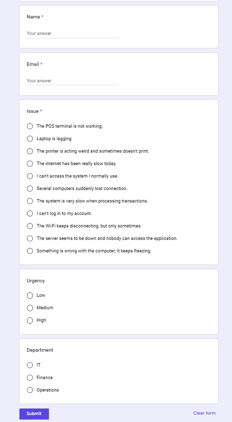
Users submit an IT support request through a structured request form containing their contact information, issue, urgency, and department.
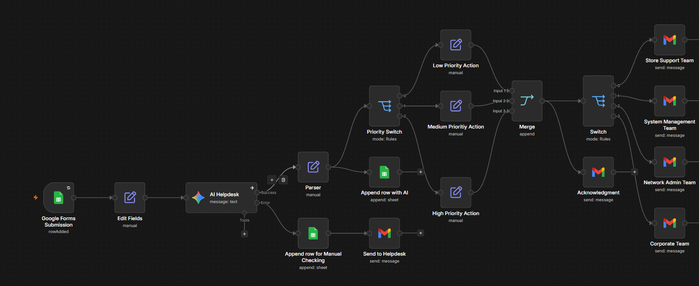
The n8n workflow receives the submitted ticket, processes the information using AI-assisted analysis, determines the appropriate priority action, and routes the resulting ticket to the appropriate support team.
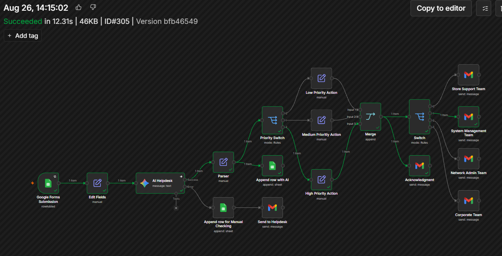
The workflow successfully executes the connected automation steps, demonstrating the processing and routing of a submitted support ticket.
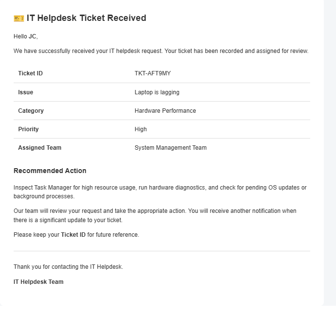
After processing the request, the system automatically sends an acknowledgment containing the ticket ID, issue, category, priority, assigned team, and recommended action.
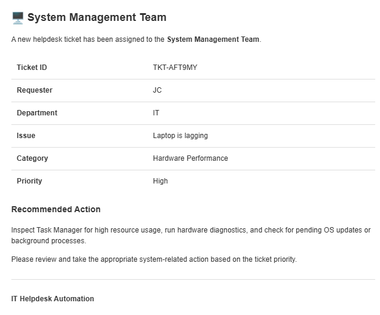
Based on the analyzed ticket information, the system automatically determines the appropriate support team responsible for handling the issue. This helps route tickets to the correct team without requiring manual assignment.
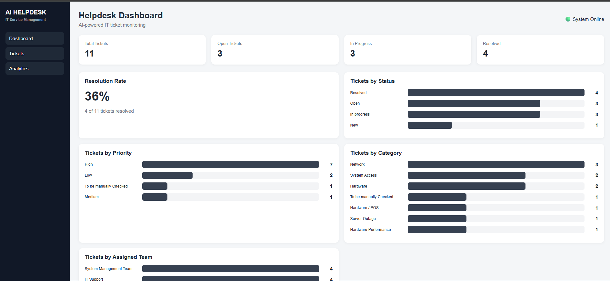
The dashboard provides ticket search and filtering along with analytics for total tickets, resolution rate, status, priority, category, and assigned team.
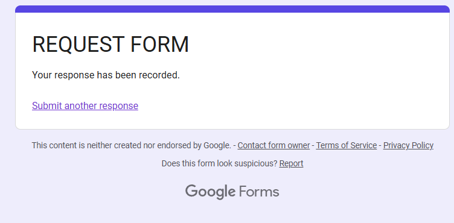
The request form confirms that the user's submission has been successfully recorded and is ready for automated processing.
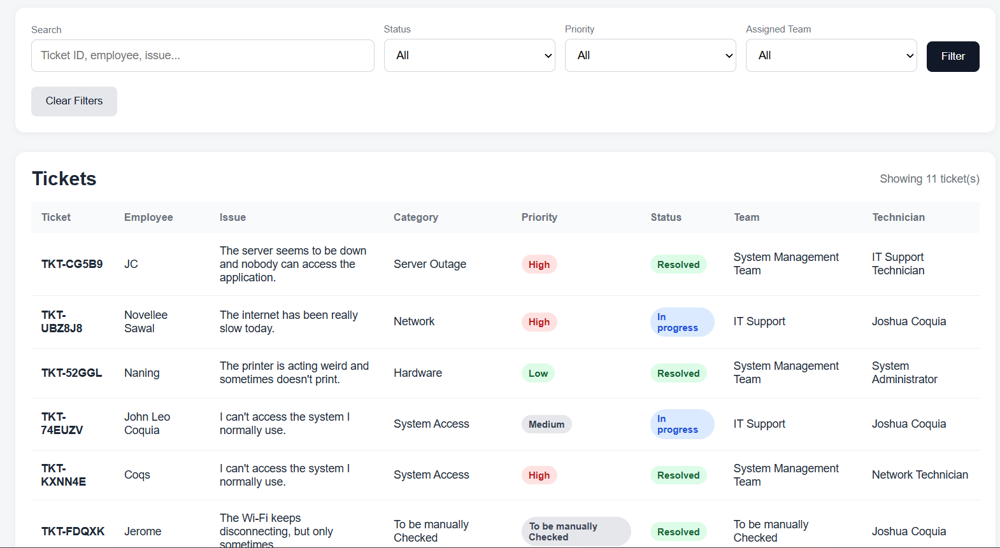
Individual tickets display the issue, AI suggested action, priority, status, assigned team, technician, resolution notes, and resolution timestamp.
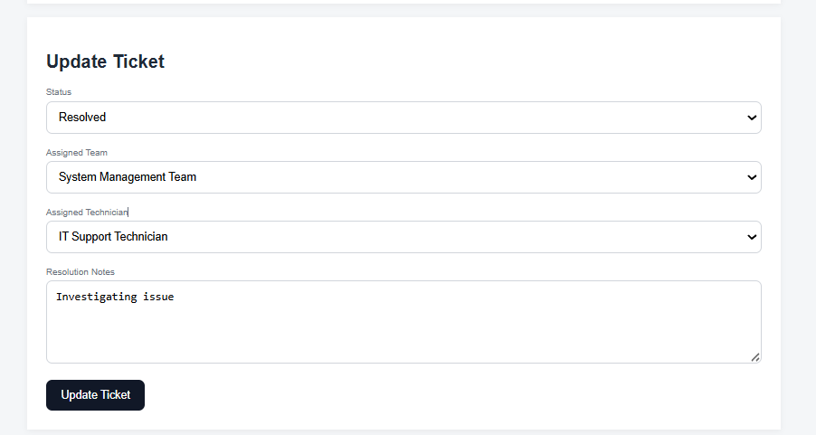
Support personnel can update the ticket status, assigned team, technician, and resolution notes through the helpdesk interface.
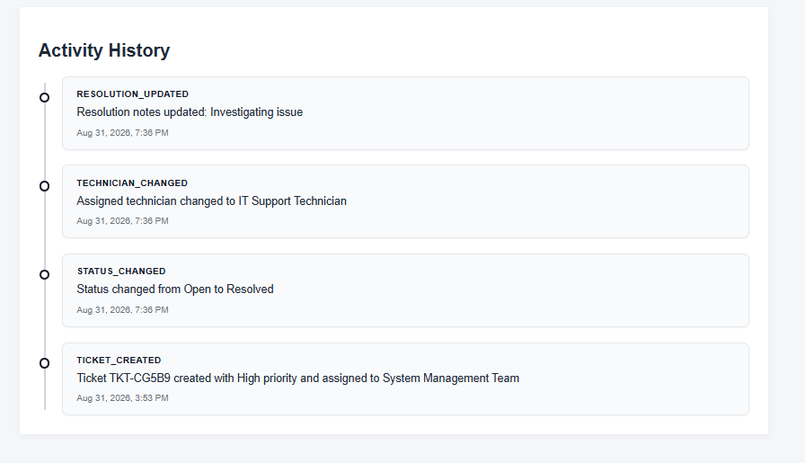
The activity timeline records important ticket changes, including status updates, team assignments, technician changes, resolution updates, and ticket creation.
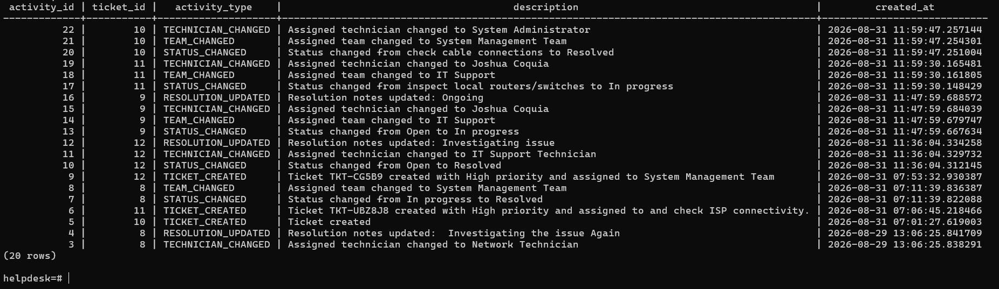
Ticket activity is persisted in PostgreSQL, providing a database-level audit trail for ticket lifecycle changes.
Learned how different services can be connected to create an automated process.
Learned how AI can be integrated into workflows to assist with decision-making and data processing.
Worked with structured ticket information and automated data transformation.
Troubleshot workflow connections, credentials, mappings, and automation logic.
Learned how to connect automated workflows to PostgreSQL for persistent ticket and activity data.
Built a Node.js interface for ticket management, updates, resolution tracking, and dashboard analytics.
Implemented activity logging to maintain a clear history of important ticket lifecycle changes.
Used Docker containers to run the dashboard and PostgreSQL environment consistently during development.